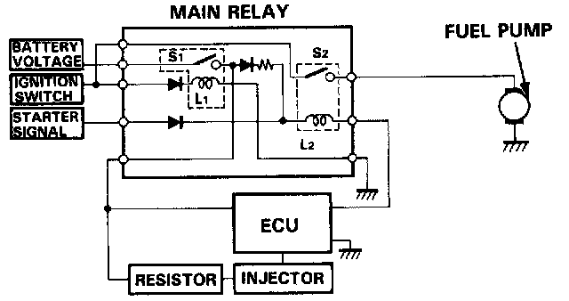

Main Relay (Computer/Fuel System): Description and Operation

Main Relay Description
This relay is installed at the left side of the cowl. The main relay actually contains two individual relays. One relay is energized whenever the ignition is on. It supplies battery voltage to the ECU, power to the injectors, and power for the second relay.
The second relay is energized for 2 seconds when the ignition is switched on, and when the engine is running. It supplies power to the fuel pump.